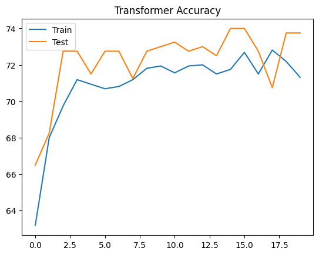
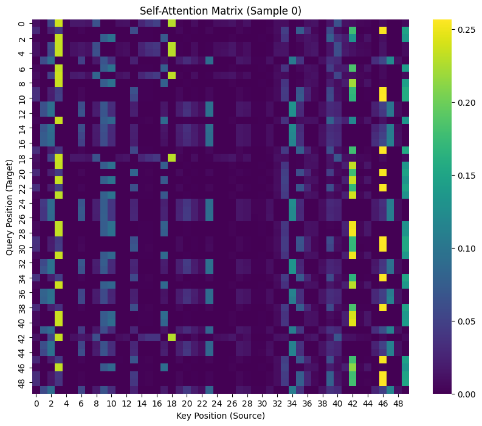

在上一篇CNN_vs_CNN+Attention中，我们尝试给CNN加上了Attention机制，效果拔群。但回头一想，既然Attention这么强，我们为什么还要留着CNN这个“底座”呢？
CNN像是一个拿着放大镜（卷积核）逐行扫描的检阅官，视野有限（感受野）；而Attention机制像是一个拥有上帝视角的指挥官，能一眼看到所有位置之间的关联。
如果把CNN完全拿掉，只用Attention，是不是就能构成现在大火的Transformer架构？没错！今天我们就来把之前的任务用纯Transformer架构重写一遍，看看它到底强在哪里。
0. 核心概念：Self-Attention (自注意力)
在之前的“CNN+Attention”里，我们用的是一种“Decoder-Encoder Attention”（Query来自全图平均，Key/Value来自局部）。
而在Transformer里，核心是Self-Attention。 想象一下，DNA序列里的每一个碱基（A, C, G, T）都是一个人。大家在一个房间里开会。
- CNN：每个人只能和身边的人窃窃私语（局部卷积）。
- Self-Attention：每个人都可以直接向房间里的任何一个人喊话，不管他坐在哪里。
如果序列中第5个位置是A，第45个位置是T，它们构成了某种关键互补配对。
- CNN需要叠很多层才能让它们“相遇”。
- Transformer在第一层就能让它们直接“握手”。
1. 数据准备：从 One-Hot 到 Embedding
Transformer 的输入通常不是 One-Hot 编码，而是索引（Index），然后通过 Embedding 层 转换成向量。这更符合 NLP 的习惯。
- A → 0
- C → 1
- G → 2
- T → 3
我们稍微修改一下之前的生成数据的代码：
import numpy as np
import torch
import torch.nn as nn
import torch.optim as optim
import torch.nn.functional as F
from torch.utils.data import DataLoader, TensorDataset
from sklearn.model_selection import train_test_split
import matplotlib.pyplot as plt
import seaborn as sns
import math
# --- 1. Data Generation (Index-based) ---
def generate_data_indices(num_samples=2000, seq_len=50, motif="CGACCGAACTCC"):
X = []
y = []
motif_positions = [] # 新增：记录 Motif 的真实位置
base_to_int = {'A': 0, 'C': 1, 'G': 2, 'T': 3}
for _ in range(num_samples):
# 生成随机背景序列 (0-3)
seq_int = np.random.randint(0, 4, seq_len)
label = 0
start_idx = -1 # 默认没有 Motif
# 50% 概率插入 Motif
if np.random.rand() > 0.5:
start_idx = np.random.randint(0, seq_len - len(motif))
for i, char in enumerate(motif):
seq_int[start_idx + i] = base_to_int[char]
label = 1
X.append(seq_int)
y.append(label)
motif_positions.append(start_idx)
return np.array(X, dtype=np.int64), np.array(y, dtype=np.float32), np.array(motif_positions)
# 生成数据
X, y, positions = generate_data_indices()
print(f"Data shape: {X.shape}") # Should be (2000, 50)
print(f"Sample sequence: {X[0]}")
print(f"Sample position: {positions[0]}")2. 模型构建：手搓一个 Transformer Block
为了让你看清内部结构，同时也为了方便后面提取 Attention 权重画图，我们不直接用 nn.TransformerEncoder，而是用 nn.MultiheadAttention 手动组装一个 Block。
一个标准的 Transformer Encoder Block 包含：
- Multi-Head Self-Attention: 核心组件。
- Add & Norm: 残差连接 + 层归一化（防止梯度消失，加速收敛）。
- Feed Forward: 一个简单的全连接层，用来处理特征。
- Add & Norm: 再来一次。
2.1 位置编码 (Positional Encoding)
这是 Transformer 必须要有的组件！ 因为 Self-Attention 机制是“无序”的（看第1个词和看第50个词没区别），它不知道位置信息。我们需要人为地把位置信息“加”进去。
核心代码实现 (Sinusoidal 固定编码)
这里我们使用的是原始 Transformer 论文中的正弦/余弦固定编码。
class PositionalEncoding(nn.Module):
def __init__(self, d_model, max_len=5000):
super(PositionalEncoding, self).__init__()
# --- 1. 计算固定位置编码 (Mathematics) ---
# 这是一个数学公式计算出的矩阵，不是训练出来的参数
pe = torch.zeros(max_len, d_model)
position = torch.arange(0, max_len, dtype=torch.float).unsqueeze(1)
# div_term 用于生成不同频率的正弦波
div_term = torch.exp(torch.arange(0, d_model, 2).float() * (-math.log(10000.0) / d_model))
# 偶数位用 sin，奇数位用 cos
pe[:, 0::2] = torch.sin(position * div_term)
pe[:, 1::2] = torch.cos(position * div_term)
# --- 2. 关键：注册为 Buffer ---
# register_buffer 告诉 PyTorch：
# "这是模型状态的一部分（保存模型时带上它），但它不是参数（Parameter）"
# "不要对它计算梯度，也不要用优化器更新它"
self.register_buffer('pe', pe)
def forward(self, x):
# x shape: [batch_size, seq_len, d_model]
# 加上对应长度的位置编码
# 注意：这里是“相加”，不是拼接
x = x + self.pe[:x.size(1), :].unsqueeze(0)
return xFAQ: 位置编码是学出来的吗？
在上面的代码中，不是。它是通过数学公式直接计算并锁死的。
- Fixed (当前做法): 使用
sin/cos公式。- 优点: 具有很好的外推性（Extrapolation），理论上能处理比训练集更长的序列；能很好地表达相对位置关系。
- Learnable (BERT/GPT 做法):
- 如果你想让模型自己学习位置编码，代码会变得更简单：
# 这是一个普通的 Embedding 层，参数随机初始化，随训练更新 self.pos_encoder = nn.Embedding(max_len, d_model)- 优点: 适应性强，但在处理超长序列或从未见过的长度时可能表现不如固定编码。
2.2 Transformer Block 与 主模型
class MotifTransformer(nn.Module):
def __init__(self, vocab_size=4, d_model=32, nhead=4, num_layers=1, max_len=50):
super(MotifTransformer, self).__init__()
# 1. Embedding: 把 0,1,2,3 变成向量
self.embedding = nn.Embedding(vocab_size, d_model)
# 2. Positional Encoding: 注入位置信息
self.pos_encoder = PositionalEncoding(d_model, max_len)
# 3. Transformer Block (这里为了教学清晰，我们只用 1 层，且手动定义)
# 如果 num_layers > 1，可以用 nn.TransformerEncoder
self.self_attn = nn.MultiheadAttention(d_model, nhead, batch_first=True)
self.norm1 = nn.LayerNorm(d_model)
self.ffn = nn.Sequential(
nn.Linear(d_model, d_model * 2), # 扩大维度
nn.ReLU(),
nn.Linear(d_model * 2, d_model) # 缩回维度
)
self.norm2 = nn.LayerNorm(d_model)
# 4. Classifier
self.fc = nn.Linear(d_model, 1)
def forward(self, x):
# x: [batch, seq_len]
# Step 1: Embedding + Pos
x = self.embedding(x) * math.sqrt(32) # scaling is a trick in original paper
x = self.pos_encoder(x) # [batch, seq_len, d_model]
# Step 2: Self-Attention
# need_weights=True 会返回 attention map
# average_attn_weights=False (关键修改)：让我们拿到每个头单独的权重！[batch, nhead, seq, seq]
attn_output, attn_weights = self.self_attn(x, x, x, need_weights=True, average_attn_weights=False)
# Step 3: Add & Norm (Residual Connection)
x = self.norm1(x + attn_output)
# Step 4: Feed Forward + Add & Norm
ff_output = self.ffn(x)
x = self.norm2(x + ff_output)
# Step 5: Pooling & Output
# 我们把所有位置的特征取平均 (Global Average Pooling)
# 也可以取第一个位置 (CLS token) 的特征
x_mean = x.mean(dim=1) # [batch, d_model]
logits = self.fc(x_mean)
return logits, attn_weights3. 训练模型
训练代码几乎不用变，只需要注意输入不再需要手动转 One-Hot。
# 数据切分
X_train, X_test, y_train, y_test, pos_train, pos_test = train_test_split(X, y, positions, test_size=0.2, random_state=42)
# 注意：我们在 Dataset 中加入了 positions，但这不参与训练，只用于验证时的可视化
train_dataset = TensorDataset(torch.from_numpy(X_train), torch.from_numpy(y_train), torch.from_numpy(pos_train))
test_dataset = TensorDataset(torch.from_numpy(X_test), torch.from_numpy(y_test), torch.from_numpy(pos_test))
train_loader = DataLoader(train_dataset, batch_size=32, shuffle=True)
test_loader = DataLoader(test_dataset, batch_size=32, shuffle=False)
# 初始化模型
model = MotifTransformer(d_model=32, nhead=4) # 32维向量，4个头
criterion = nn.BCEWithLogitsLoss()
optimizer = optim.Adam(model.parameters(), lr=0.001)
# 训练循环
train_acc_history = []
test_acc_history = []
print("Start Training Transformer...")
epochs = 20
for epoch in range(epochs):
model.train()
correct = 0; total = 0
for inputs, labels, _ in train_loader: # 多了一个返回值 position，用 _ 忽略
optimizer.zero_grad()
outputs, _ = model(inputs) # 这里的 _ 是 attention weights
loss = criterion(outputs.squeeze(), labels)
loss.backward()
optimizer.step()
predicted = (torch.sigmoid(outputs.squeeze()) > 0.5).float()
total += labels.size(0)
correct += (predicted == labels).sum().item()
train_acc = 100 * correct / total
# Validation
model.eval()
correct = 0; total = 0
with torch.no_grad():
for inputs, labels, _ in test_loader:
outputs, _ = model(inputs)
predicted = (torch.sigmoid(outputs.squeeze()) > 0.5).float()
total += labels.size(0)
correct += (predicted == labels).sum().item()
test_acc = 100 * correct / total
train_acc_history.append(train_acc)
test_acc_history.append(test_acc)
if (epoch+1) % 5 == 0:
print(f'Epoch [{epoch+1}/{epochs}], Train Acc: {train_acc:.2f}%, Test Acc: {test_acc:.2f}%')
# 画个简单的收敛图
plt.plot(train_acc_history, label='Train')
plt.plot(test_acc_history, label='Test')
plt.legend()
plt.title('Transformer Accuracy')
plt.show()Start Training Transformer...
Epoch [5/20], Train Acc: 69.62%, Test Acc: 67.25%
Epoch [10/20], Train Acc: 70.75%, Test Acc: 69.25%
Epoch [15/20], Train Acc: 70.69%, Test Acc: 68.00%
Epoch [20/20], Train Acc: 70.88%, Test Acc: 68.25%

你可能会发现，Transformer 的收敛速度也非常快，甚至比单纯的 CNN 更快，因为它能直接捕捉全局特征。
4. 可解释性：上帝视角看到了什么？
这是 Transformer 最迷人的地方。通过 Self-Attention Matrix，我们可以看到模型在处理序列时，每一个位置到底在看哪里。
对于一个包含 Motif 的序列，我们期望看到 Motif 内部的碱基之间有强烈的相互关注。
import matplotlib.patches as patches
def visualize_attention(model, dataset, sample_idx=None, motif_len=12):
model.eval()
# 找一个正样本 (有 Motif 的)
if sample_idx is None:
for i in range(len(dataset)):
_, label, _ = dataset[i]
if label == 1:
sample_idx = i
break
input_seq, label, motif_start = dataset[sample_idx]
input_tensor = input_seq.unsqueeze(0) # [1, 50]
with torch.no_grad():
logits, attn_weights = model(input_tensor)
# attn_weights shape: [batch, nhead, seq_len, seq_len]
# 计算预测结果
prob = torch.sigmoid(logits).item()
pred = 1 if prob > 0.5 else 0
print(f"Sample {sample_idx} | True Label: {label.item()} | Predicted: {pred} (Prob: {prob:.4f})")
if label == 1 and pred == 0:
print("⚠️ 警告：模型没认出这个样本是 Motif，热图可能不会显示有效关注！")
attn_weights = attn_weights.squeeze(0).numpy() # [nhead, 50, 50]
nhead = attn_weights.shape[0]
# 绘制多子图：每个头一张图
fig, axes = plt.subplots(1, nhead, figsize=(5 * nhead, 5))
if nhead == 1: axes = [axes] # 兼容单头情况
for h in range(nhead):
ax = axes[h]
sns.heatmap(attn_weights[h], cmap='viridis', ax=ax, cbar=False)
ax.set_title(f'Head {h+1}')
ax.set_xlabel('Key (Source)')
if h == 0: ax.set_ylabel('Query (Target)')
else: ax.set_yticks([]) # 隐藏y轴刻度
# 画红框
if motif_start != -1:
rect = patches.Rectangle((motif_start, motif_start), motif_len, motif_len,
linewidth=2, edgecolor='red', facecolor='none')
ax.add_patch(rect)
plt.suptitle(f'Self-Attention by Heads (Sample {sample_idx})', fontsize=16)
plt.tight_layout()
plt.show()
# 运行可视化
visualize_attention(model, test_dataset)
结果解读
（更新版）
我修改了代码，现在它会：
- 打印预测结果：首先确认模型是否答对了！如果模型预测
Prob < 0.5，说明它根本没找到 Motif，这时候热图里没有信号是正常的。 - 分头显示 (Head 1-4)：
- 竖直条纹 (Vertical Stripes)：你可能会在某些头看到明显的竖条纹。这通常代表Global Attention或Positional Bias（比如模型觉得第0个位置很重要，或者单纯是背景噪声）。
- 对角线/方块 (Diagonal/Block)：请寻找那个红框内部有亮色斑点或方块的头。那个头就是我们要找的**“Motif 捕手”**！它表示 Motif 内部的碱基正在互相“握手”。
调试建议：
如果还是看不清，可以尝试重新运行几次 generate_data 和 train（模型初始化不同，学到的东西也会不同），或者把训练轮数 epochs 增加到 50 看看。
5. 总结
| 特性 | CNN | Transformer |
|---|---|---|
| 视野 | 局部 (受卷积核大小限制) | 全局 (一步到位) |
| 输入处理 | 常用 One-Hot | 常用 Embedding + PosEncoding |
| 计算方式 | 卷积扫描 | 自注意力 (Self-Attention) |
| 优势 | 捕捉局部特征 (Motif) 极强 | 捕捉长距离依赖，可解释性更好 |
通过这个实验，我们不仅用 Transformer 完美复现了 Motif 识别任务，还学会了如何手搓 Transformer Block 以及如何可视化它的“大脑回路”。
6. 进阶提问：直接用 nn.TransformerEncoder 还能拿到权重吗？
这是一个非常好的问题！很多同学为了省事，想直接调用 nn.TransformerEncoder，结果发现死活拿不到 Attention Map。
简短的回答：默认情况下，不能。
为什么？
PyTorch 官方的 nn.TransformerEncoder 和 nn.TransformerEncoderLayer 是为了工业级部署设计的，高度封装。
在它们的 forward() 源码中，self_attn 计算出的权重（Weights）虽然产生了一瞬间，但因为函数只返回了特征张量（Output Tensor），这个权重随即被丢弃了。
这就是为什么我们在科研（需要分析可解释性）或教学时，通常会像上面那样“手搓”一个 Block，或者继承官方类重写 forward 函数。
如果我非要用官方模块怎么办？(黑魔法：Hook)
如果你坚持使用官方模块，可以使用 PyTorch 的 Hook 机制。这就好比在官方封装好的黑盒子上钻个孔，装一个“窃听器”。
# 假设你已经实例化了一个官方模型
# model.encoder = nn.TransformerEncoder(...)
# 1. 定义一个容器来存“窃听”到的权重
attention_weights = {}
# 2. 定义 Hook 函数
def get_attention_hook(name):
def hook(module, input, output):
# nn.MultiheadAttention 的 forward 返回 (attn_output, attn_weights)
# output[1] 就是我们要的权重！
attention_weights[name] = output[1].detach().cpu()
return hook
# 3. 注册 Hook (关键步骤)
# 你需要找到 encoder 里面的 layer，再找到里面的 self_attn 模块
# 这里的命名 'layers' 和 'self_attn' 取决于 PyTorch 源码命名
for i, layer in enumerate(model.encoder.layers):
layer.self_attn.register_forward_hook(get_attention_hook(f"layer_{i}"))
# 4. 正常跑前向传播
output = model(input_data)
# 5. 查看窃听结果
print(attention_weights['layer_0'].shape)
# 成功拿到！ [batch_size, seq_len, seq_len]风险提示：
- 版本依赖：这种方法依赖于 PyTorch 内部模块的命名（
self_attn），如果官方改名了，代码就会报错。 - Flash Attention：在 PyTorch 2.0+ 中，如果启用了加速版的 Flash Attention，底层计算会融合，根本不会生成完整的 Attention Matrix，这时候连 Hook 都拿不到（或者拿到是 None）。
结论：为了稳定、可控且通过 need_weights=True 明确获取权重，“手搓 Block”或者是继承重写是目前最稳妥的科研选择。